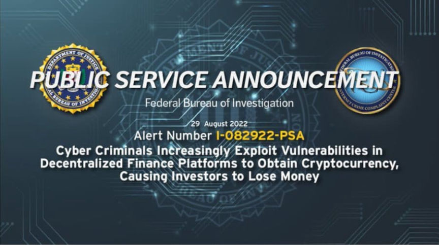
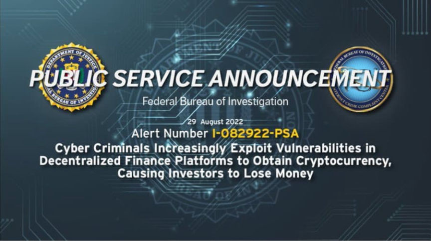

FBI Warns About DeFi Platform Vulnerabilities
~3 min read | Published on 2022-08-30, tagged Hack using 631 words.
The Federal Bureau of Investigation has warned about the exploitation of decentralized finance platfrms.
A public service announcement from the FBI warns people about the risks involved in investing in a decentralized finance (DeFi) platform. Cybercriminals exploit vulnerabilities in the smart contracts that govern DeFi platforms, resulting in large-scale thefts.
According to a report from Chainalysis, hackers stole more than $1 billion in cryptocurrency between January and March of this year. 97% of the funds were stolen from DeFi platforms.

The FBI’s warning is below.
The FBI is warning investors cyber criminals are increasingly exploiting vulnerabilities in decentralized finance (DeFi) platforms to steal cryptocurrency, causing investors to lose money. The FBI has observed cyber criminals exploiting vulnerabilities in the smart contracts governing DeFi platforms to steal investors’ cryptocurrency. The FBI encourages investors who suspect cyber criminals have stolen their DeFi investments to contact the FBI via the Internet Crime Complaint Center or their local FBI field office.
THREAT
Cyber criminals are increasingly exploiting vulnerabilities in the smart contracts governing DeFi platforms to steal cryptocurrency, causing investors to lose money. A smart contract is a self-executing contract with the terms of the agreement between the buyer and seller written directly into lines of code that exist across a distributed, decentralized blockchain network. Cyber criminals seek to take advantage of investors’ increased interest in cryptocurrencies, as well as the complexity of cross-chain functionality and open source nature of DeFi platforms.
Between January and March 2022, cyber criminals stole $1.3 billion in cryptocurrencies, almost 97 percent of which was stolen from DeFi platforms, according to the US blockchain analysis firm Chainalysis. This is an increase from 72 percent in 2021 and 30 percent in 2020, respectively. Separately, the FBI has observed cyber criminals defraud DeFi platforms by:
[list]Initiating a flash loan that triggered an exploit in the DeFi platform’s smart contracts, causing investors and the project’s developers to lose approximately $3 million in cryptocurrency as a result of the theft.[*]Exploiting a signature verification vulnerability in the DeFi platform’s token bridge and withdraw all of the platform’s investments, resulting in approximately $320 million in losses.[*]Manipulating cryptocurrency price pairs by exploiting a series of vulnerabilities, including the DeFi platform’s use of a single price oracle, a and then conducting leveraged trades that bypassed slippage checks b and benefited from price calculation errors to steal approximately $35 million in cryptocurrencies.[/list]
RECOMMENDATIONS
Investment involves risk. Investors should make their own investment decisions based on their financial objectives and financial resources and, if in any doubt, should seek advice from a licensed financial adviser. In addition, the FBI recommends investors take the following precautions:
[list]Research DeFi platforms, protocols, and smart contracts before investing and be aware of the specific risks involved in DeFi investments[*]Ensure the DeFi investment platform has conducted one or more code audits performed by independent auditors. A code audit typically involves a thorough review and analysis of the platform’s underlying code to identify vulnerabilities or weaknesses in the code that could negatively impact the platform’s performance.[*]Be alert to DeFi investment pools with extremely limited timeframes to join and rapid deployment of smart contracts, especially without the recommended code audit.[*]Be aware of the potential risk posed by crowdsourced solutions to vulnerability identification and patching. Open source code repositories allow unfettered access to all individuals, to include those with nefarious intentions.[/list] The FBI recommends DeFi platforms take the following precautions:[list]Institute real time analytics, monitoring, and rigorous testing of code in order to more quickly identify vulnerabilities and respond to indicators of suspicious activity.[*]Develop and implement an incident response plan that includes alerting investors when smart contract exploitation, vulnerabilities, or other suspicious activity is detected. [/list]
Cyber Criminals Increasingly Exploit Vulnerabilities in Decentralized Finance Platforms to Obtain Cryptocurrency, Causing Investors to Lose Money | www.ic3.gov, archive.is, archive.org
A public service announcement from the FBI warns people about the risks involved in investing in a decentralized finance (DeFi) platform. Cybercriminals exploit vulnerabilities in the smart contracts that govern DeFi platforms, resulting in large-scale thefts.
According to a report from Chainalysis, hackers stole more than $1 billion in cryptocurrency between January and March of this year. 97% of the funds were stolen from DeFi platforms.

Top men
The FBI’s warning is below.
The FBI is warning investors cyber criminals are increasingly exploiting vulnerabilities in decentralized finance (DeFi) platforms to steal cryptocurrency, causing investors to lose money. The FBI has observed cyber criminals exploiting vulnerabilities in the smart contracts governing DeFi platforms to steal investors’ cryptocurrency. The FBI encourages investors who suspect cyber criminals have stolen their DeFi investments to contact the FBI via the Internet Crime Complaint Center or their local FBI field office.
THREAT
Cyber criminals are increasingly exploiting vulnerabilities in the smart contracts governing DeFi platforms to steal cryptocurrency, causing investors to lose money. A smart contract is a self-executing contract with the terms of the agreement between the buyer and seller written directly into lines of code that exist across a distributed, decentralized blockchain network. Cyber criminals seek to take advantage of investors’ increased interest in cryptocurrencies, as well as the complexity of cross-chain functionality and open source nature of DeFi platforms.
Between January and March 2022, cyber criminals stole $1.3 billion in cryptocurrencies, almost 97 percent of which was stolen from DeFi platforms, according to the US blockchain analysis firm Chainalysis. This is an increase from 72 percent in 2021 and 30 percent in 2020, respectively. Separately, the FBI has observed cyber criminals defraud DeFi platforms by:
[list]
RECOMMENDATIONS
Investment involves risk. Investors should make their own investment decisions based on their financial objectives and financial resources and, if in any doubt, should seek advice from a licensed financial adviser. In addition, the FBI recommends investors take the following precautions:
[list]
Cyber Criminals Increasingly Exploit Vulnerabilities in Decentralized Finance Platforms to Obtain Cryptocurrency, Causing Investors to Lose Money | www.ic3.gov, archive.is, archive.org
This global push for increased regulation this month is organic!